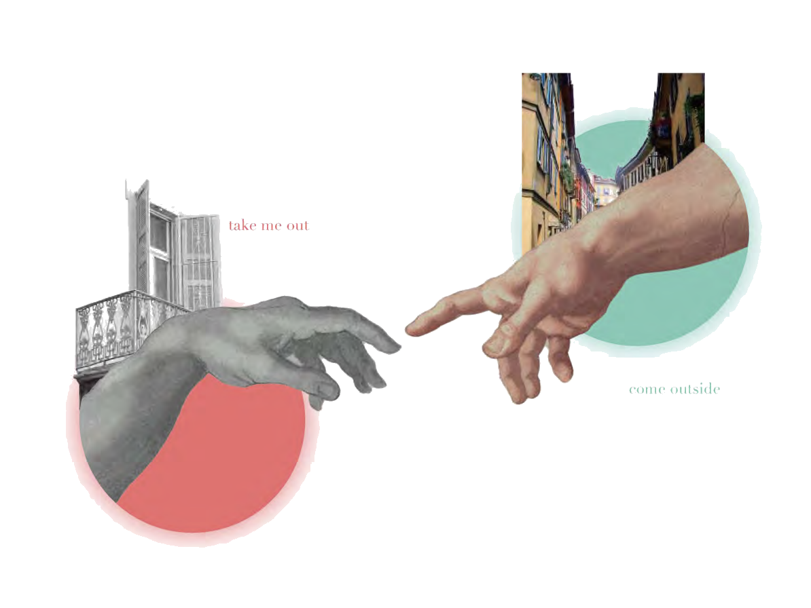
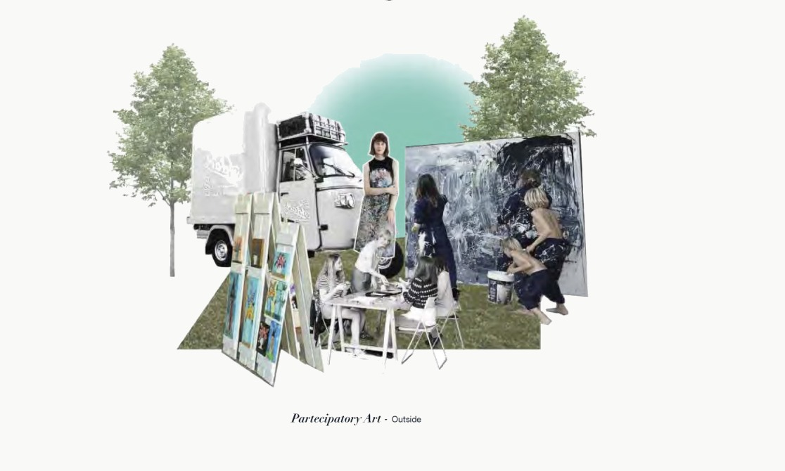
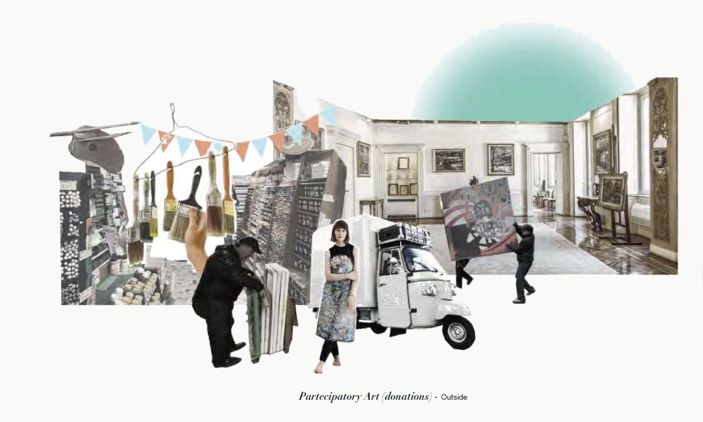
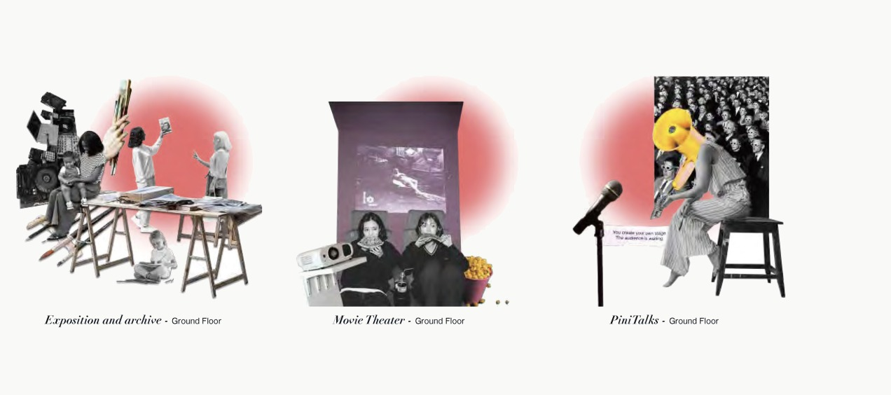
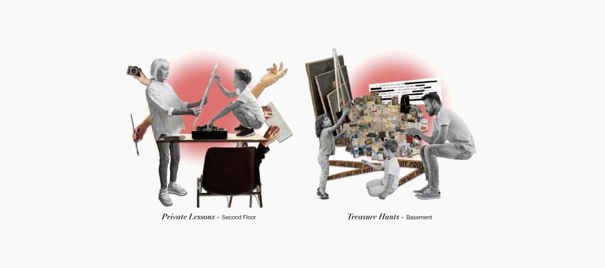

Exchange our creativity!
Participatory art experiences for everybody around the distant neighborhoods of Milan.
Before closing, the Fondazione hosted workshops for children inside the walls. IO proposes taking participatory art outside to different groups — giving everyone the experience of living art in first person, creating and reinforcing communities.
在基金会关闭前，仅面向儿童开展室内工坊。IO提出将参与式艺术带出围墙，面向所有群体——让每个人都能亲身体验艺术的创造，在参与中建立并强化社区联结。

the neighborhoods, the suburbs, the people, the curiosity, the new, the families, the experiences, the differences.
社区、郊区、人群、好奇心、家庭、体验与差异。
the Fondazione, the works of Renzo Bongiovanni Radice, the effort of Adolfo Pini, the spaces, the culture, Brera, the art.
基金会、历史藏品、布雷拉的空间、艺术与文化积淀。
the community, sharing experiences, exchanging ideas, the bonding, the understanding, creating something new together, networks.
共同体、交流、理解、共创——编织内部与外部之间的新纽带。
Taking the Fondazione
将基金会带向城市

How does IO work with the current proposals?
IO如何在现有方案中发挥作用？
Fondazione Adolfo Pini wants to finance and help all the young artists. "Establish awards and scholarships for young artists" is the starting point of IO. IO targets every non-artist from different backgrounds, helping them work on their creativities together and discover each other, building new relationships inside and outside Fondazione Adolfo Pini.
皮尼基金会的使命是资助青年艺术家。IO以此为起点，将不同背景的非艺术家纳入目标群体，推动人们跨越边界共同激发创意，在基金会内外建立全新的人际连接与关系网络。
all together partecipating to the building of our core
共同参与，共同构建我们的核心
IO项目以皮尼基金会（Fondazione Pini）为核心枢纽，在现有方案的基础上支持青年艺术家；同时提出新方案，将非艺术家与艺术家混合群体纳入合作，通过新活动投入资源、建立连接，共同扩展至更多社区，形成更广泛的参与网络。

Out: the Neighborhoods · 走向社区
The Apecar travels to suburbs with artists, bringing participatory art directly to the people. / Apecar携艺术家深入郊区，将参与式艺术直接带给居民。


In: the Fondazione · 走进基金会
Activities spread across all floors of the Fondazione Pini building. / 皮尼基金会各楼层均设有配套活动。

展览与档案 · 电影之夜 · 皮尼讲座
一楼设有社区艺术展览空间与档案室，保存历届创作成果；同时提供文化放映和艺术对谈活动，向所有人开放。

私人课程 · 寻宝游戏
二楼提供付费一对一艺术课程，满足深度学习需求；地下室则以寻宝游戏的形式，让孩子在趣味探索中感受艺术。